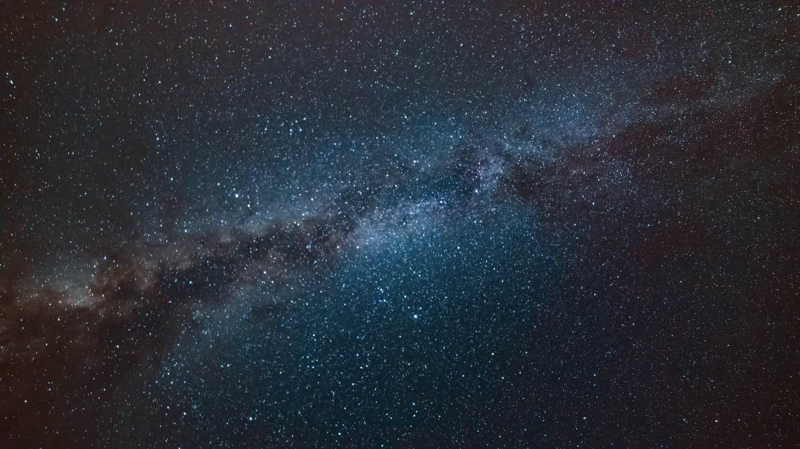
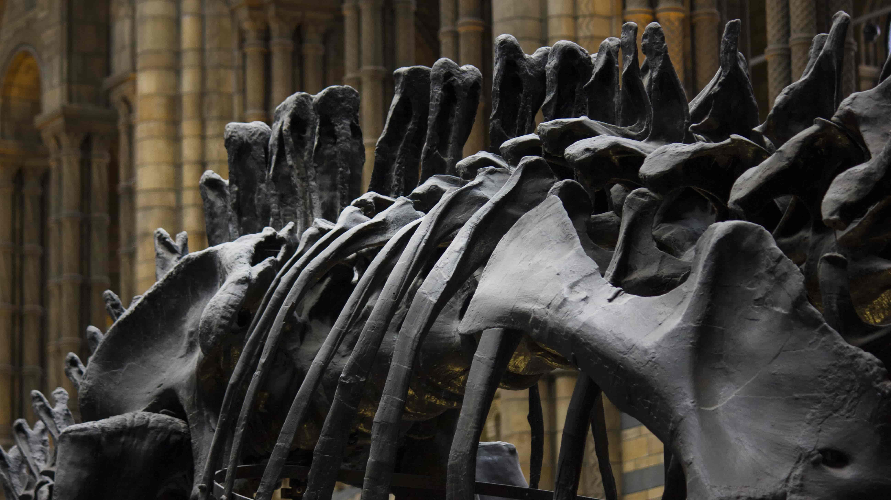
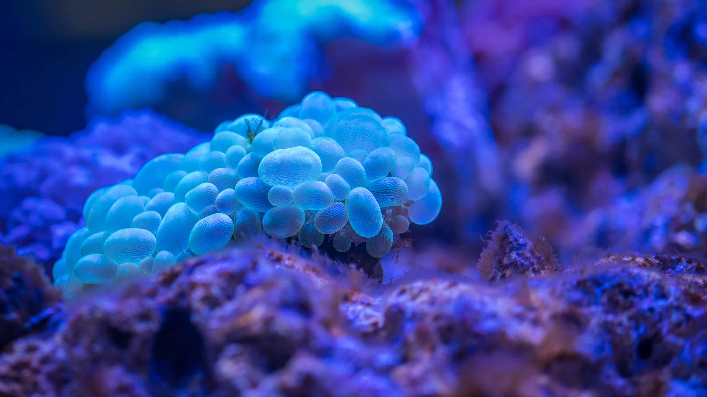
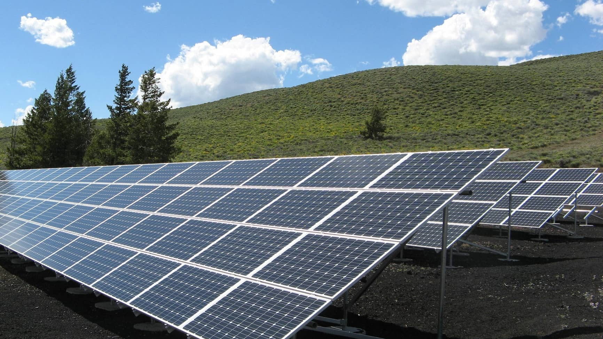

At the Community Science Museum you can explore different special events and
exhibitions in addition to the five permanent exhibitions. Read more about
these below.

Cosmology
Explore the wonders of our cosmos.
Our fantastic exhibition, ‘The Sky
Above Us’, explores the night sky and
what we can see and know about the
universe around us.
We’ll locate the various constellations
and galaxies that can be seen and
learn a bit about the early navigators
who used the stars to travel by.
Follow the journey of our solar
exploration: from early Arab traders,
to Galileo’s telescope, to the latest
exploration of the planets in our
solar system.

Evolution
For centuries, philosophers and scientists
have wrestled with the question of our
origins. Where do we come from and how
did we get here?
Since Darwin proposed his theory of
evolution we have had a framework for
exploring and understanding our place
in this world.Discover the origins of life on this planet
and how the species we know today have
evolved our time.
You can also take some time to meet a
few of the creatures who didn’t survive,
including our Woolly Mammoth, the Dodos,
and a number of dinosaurs too.

Biology & Medicine
Explore the wonders of our cosmos.
Our fantastic exhibition, ‘The Sky
Above Us’, explores the night sky and
what we can see and know about the
universe around us.
We’ll locate the various constellations
and galaxies that can be seen and
learn a bit about the early navigators
who used the stars to travel by.
Robotics
The information revolution is here and
robotics and artificial intelligence are the
science of the future.
From useful home applications of AI to
industrial uses of robotics, the future
is here. You can even say hello and shake
the hand of Rob the Robot.

Ecology
As we learn more and more of the impact
humans are having on the planet, the more
important it becomes that scientists explore
how to create a sustainable future not just
for humans but for the whole planet.
In our ecology section of the museum, we
unpack the dangers we currently face
including global warming, extinction of
species, and pollution. But we also focus on
the positive ways we can all contribute to
a brighter future.